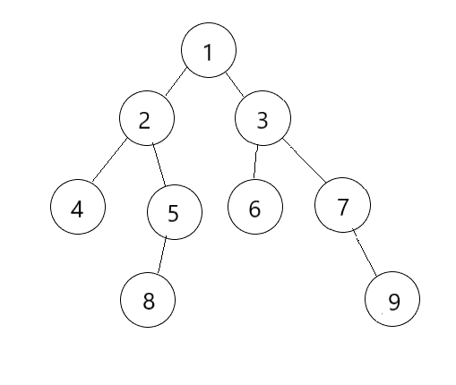
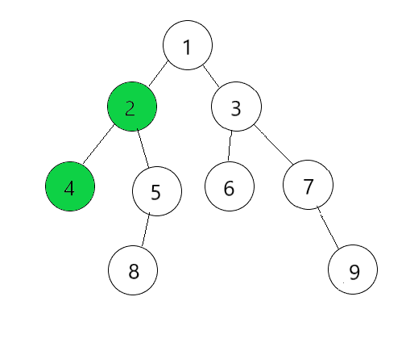
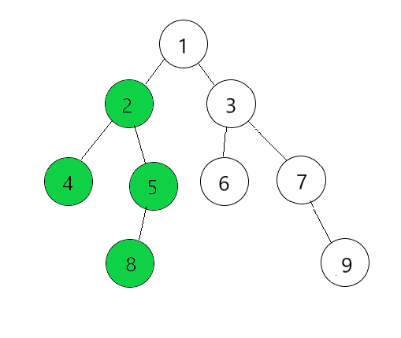
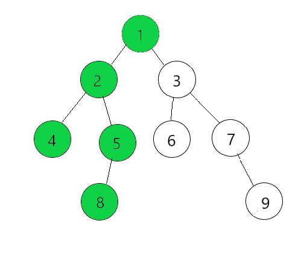
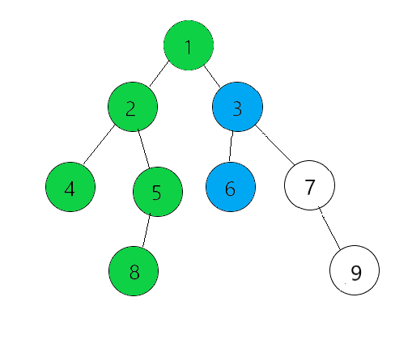
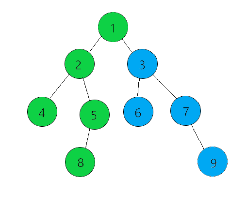
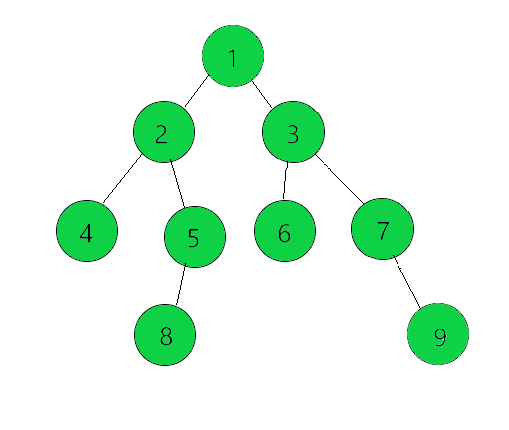
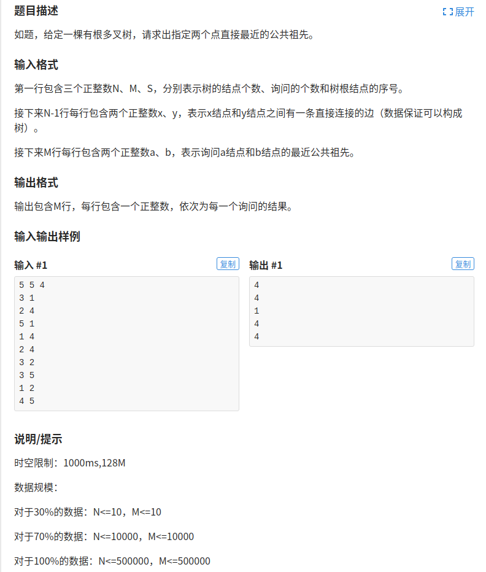

前言
LCA(Least Common Ancestors)，即最近公共祖先，是指在有根树中，某两个顶点U和V的最近公共祖先。

例如这一刻有根树，LCA(2, 3)是1，LCA(6, 9)是3。
这一篇blog会介绍3种如何寻找LCA的算法。
Tarjan
Tarjan(Robert Endre Tarjan)是一位著名的计算机科学家，曾在1986年获得Turing奖。一般提到Tarjan算法都会先想到强连通分量的那一个算法，但是Tarjan也发明了一个算法求解LCA问题。
要理解这一个算法需要先学会并查集，不然的话可能会有一点的小问题。Tarjan算法是强制离线的，也就是要先把所有的询问都存起来，然后再一起求解，不能边询问边回答。
Tarjan算法利用了DFS和并查集一起求解。
DFS中主要做了以下几件事情：
- 标记自己已访问（可以用一个vis数组标记）
- 在并查集中把自己作为自己的父节点，即fa[rt]=rt
- DFS所有的儿子节点，并在DFS结束后将儿子结点在并查集中的指向自身，即fa[son]=rt
- 处理和自身有关的询问，若另一个顶点在并查集中的指向不为-1(初始化时将并查集所有的结点设为-1)，则LCA(rt, other)就为fa[other]
好像干说也不知道是怎么一回事，还是看图直接一点。
就用这一颗树来做例子吧，我们分别要求LCA(2, 4)、LCA(6, 9)和LCA(6, 8)。
将fa数组初始化为-1
| index | 1 | 2 | 3 | 4 | 5 | 6 | 7 | 8 | 9 |
|---|---|---|---|---|---|---|---|---|---|
| fa | -1 | -1 | -1 | -1 | -1 | -1 | -1 | -1 | -1 |
DFS从1开始，fa[1]=1
| index | 1 | 2 | 3 | 4 | 5 | 6 | 7 | 8 | 9 |
|---|---|---|---|---|---|---|---|---|---|
| fa | 1 | -1 | -1 | -1 | -1 | -1 | -1 | -1 | -1 |
然后遍历1的儿子顶点2，fa[2]=2
| index | 1 | 2 | 3 | 4 | 5 | 6 | 7 | 8 | 9 |
|---|---|---|---|---|---|---|---|---|---|
| fa | 1 | 2 | -1 | -1 | -1 | -1 | -1 | -1 | -1 |
然后遍历2的儿子顶点4，fa[4]=4
| index | 1 | 2 | 3 | 4 | 5 | 6 | 7 | 8 | 9 |
|---|---|---|---|---|---|---|---|---|---|
| fa | 1 | 2 | -1 | 4 | -1 | -1 | -1 | -1 | -1 |
这时候4没有儿子顶点了，所以要开始处理与4有关的询问，之前我们说过要求LCA(4, 2)，这时候fa[2]!=-1,所以LCA(4, 2)=fa[2]=2,然后将4的父亲改为2,fa[4]=2
| index | 1 | 2 | 3 | 4 | 5 | 6 | 7 | 8 | 9 |
|---|---|---|---|---|---|---|---|---|---|
| fa | 1 | 2 | -1 | 2 | -1 | -1 | -1 | -1 | -1 |

继续遍历2的儿子顶点5，fa[5]=5
| index | 1 | 2 | 3 | 4 | 5 | 6 | 7 | 8 | 9 |
|---|---|---|---|---|---|---|---|---|---|
| fa | 1 | 2 | -1 | 2 | 5 | -1 | -1 | -1 | -1 |
继续遍历5的儿子顶点8，fa[8]=8
| index | 1 | 2 | 3 | 4 | 5 | 6 | 7 | 8 | 9 |
|---|---|---|---|---|---|---|---|---|---|
| fa | 1 | 2 | -1 | 2 | 5 | -1 | -1 | 8 | -1 |
然后开始处理关于8的询问，LCA(6, 8)，因为fa[6]=-1，所以我们先暂时不管，等遍历到6时再处理这一个询问，将顶点8的父亲改为5,fa[8]=5
然后回到顶点5，处理关于5的询问，没有，将顶点5的父亲改为2，回退到2
| index | 1 | 2 | 3 | 4 | 5 | 6 | 7 | 8 | 9 |
|---|---|---|---|---|---|---|---|---|---|
| fa | 1 | 2 | -1 | 2 | 2 | -1 | -1 | 5 | -1 |

回退到顶点1，将fa[2]改为1

然后继续遍历顶点3，然后到顶点6，这里和上面的修改一样，偷懒省略一点点
| index | 1 | 2 | 3 | 4 | 5 | 6 | 7 | 8 | 9 |
|---|---|---|---|---|---|---|---|---|---|
| fa | 1 | 1 | 3 | 2 | 2 | 6 | -1 | 5 | -1 |
开始处理关于6的询问，求LCA(6, 8)，因为fa[8]！=-1,然后就根据并查集的思想去找8的根节点，找到是1，所以LCA(6, 8)=1。求LCA(6, 9)时，因为fa[9]=-1，所以先暂时不管。将顶点6的父亲改为3，回退到3

继续遍历到顶点7然后到顶点9
| index | 1 | 2 | 3 | 4 | 5 | 6 | 7 | 8 | 9 |
|---|---|---|---|---|---|---|---|---|---|
| fa | 1 | 1 | 3 | 2 | 2 | 3 | 7 | 5 | 9 |
然后处理关于9的询问，求LCA(6, 9)，找到6这时候的祖先为3，所以LCA(6, 9)=3，然后回退到7回退到3

| index | 1 | 2 | 3 | 4 | 5 | 6 | 7 | 8 | 9 |
|---|---|---|---|---|---|---|---|---|---|
| fa | 1 | 1 | 3 | 2 | 2 | 3 | 3 | 5 | 7 |
最后回退到1，结束

| index | 1 | 2 | 3 | 4 | 5 | 6 | 7 | 8 | 9 |
|---|---|---|---|---|---|---|---|---|---|
| fa | 1 | 1 | 1 | 2 | 2 | 3 | 3 | 5 | 7 |
Tarjan求解LCA的过程就是这样，多看几遍流程就懂了，算法实现蛮容易的，就不写代码了
倍增
求LCA容易想到一个暴力方法就是，先将较深的顶点一步步跳到和较浅的顶点一样深度，判断他们是否相等，相等的话说明较浅的顶点就是他们的最近公共祖先，如果不相等的话，再一起一步步向上跳，直到相等为止。
倍增和这个暴力法的区别就是，倍增不是一步步跳的，它每次跳2^i步，比如1、 2、 4、 8……等。
但是现在有一个问题就是，我们怎么知道每一个顶点向上跳1、 2、 4……步到达的顶点是多少呢？所以我们要预处理每一个顶点向上跳1、 2、 4……步之后到达的顶点是什么。
预处理是用dp做的，假设fa[i][j]表示顶点i向上走2^j步之后到达的顶点。那很显然fa[i][0]就是自己的父亲。fa[i][1]就是向上跳了两步，是自己的爷爷。fa[i][2]向上跳了4步，到达了爷爷的爷爷。我们可以发现fa[i][1]=fa[fa[i][1-1]][1-1]，fa[i][2]=fa[fa[i][2-1]][2-1]。第一条等式是找自己的爷爷，相当于是父亲的父亲，第二条等式是爷爷的爷爷，所以先向上跳两步到爷爷，爷爷再向上跳两步到达爷爷的爷爷。
所以我们找出了状态转移方程为fa[i][j] = fa[fa[i][j-1]][j-1]，用dp很容易就预处理好。
用洛谷的板题来看看代码怎么写吧。

1 |
|
倍增还是蛮好理解的，不算很难。
RMQ
RMQ(Range Minimum/Maximum Query)，即区间最值查询，用来查询一段区间的最大值最小值信息，容易想到的是ST表、树状数组、线段树等数据结构。
LCA是在树上做操作，难免有一些麻烦，所以我们考虑能不能够把树用线性表示。答案是可以的，我们用DFS序将树转化为线性的。
所以将LCA问题转化为RMQ问题用到了DFS序和ST表。
DFS序
DFS序就是对一颗树进行DFS之后得到的一串序列。
DFS序有两种：
- 仅在第一次经过和最后退出时记录该顶点的序号
- 每一次经过该顶点都记录顶点的序号
在这里我们选第二种DFS序，用下面这一颗树做例子。
得到的DFS序为1、 2、 4、 4、 2、 5、 8、 8、 5、 2、 1、 3、 6、 6、 3、 7、 9、 9、 7、 3、 1，跟着图看一遍就能看懂这个DFS序怎么来的了。
ST表
ST表是一种O(nlogn)预处理O(1)查询的数据结构，其实ST表和倍增里面的fa数组类似，也是用dp来做预处理。
在这里我们维护的是最小值，所以我也用最小值来举例。
st[i][j]表示的是从i开始，长度为2^j这一段区间里面的最小值。那么如何状态转移呢？st[i][j] = min(st[i][j-1], st[i+(1<<(j-1)][j-1])。自己画个图看看是不是这么一回事。
假设我们要查询区间[l, r]的最小值要怎么做？区间的长度为r-l+1，我们要在st表中找两端区间能够覆盖住[l, r]，因为我们的st表表示的长度都是2^i那么长，那这一段区间找两段长度为k = log2(r-l+1)来进行覆盖。所以查询[l, r]的最小值就为min(st[l][k], st[r-(1<<k)+1][k])，这样就轻松的实现了O(1)查询。
放一个st表的板子1
2
3
4
5
6
7
8
9
10
11
12
13
14
15int st[maxn][20];
void st_init()
{
for(int i=1;i<=n;i++) st[i][0]=a[i]; // 长度为1的区间最小值党委就为自身
// 预处理从i开始，长度为2^j的区间
for(int j=1;(1<<j)<=n;j++)
for(int i=1;i+(1<<j)-1<=n;i++)
st[i][j]=max(st[i][j-1],st[i+(1<<(j-1))][j-1]);
}
int query(int l,int r)
{
int k=log2(r-l+1);
return min(st[l][k],st[r-(1<<k)+1][k]);
}
LCA转RMQ
现在我们知道如何用DFS序将树转化为线性结构，如何用ST表来查询区间最小值。那如何将LCA问题转化为RMQ问题呢？我们的ST表是根据得到的DFS序来做预处理，存储的是从i开始，长度为2^j这一段区间里面深度最小的顶点在DFS序中的位置。
所以我们还需要一个记录深度的dep数组，一个记录DFS序的vis数组，一个记录顶点i第一次在vis数组出现的位置的id数组。
查询LCA(a, b)时就在DFS序中，找a和b第一次出现的位置之间的这一段区间里面深度最小的顶点，该顶点就是a和b的最近公共祖先。
同样用刚刚洛谷的那一个板题来看看代码怎么写吧。
1 |
|
END
LCA问题还算是蛮常见的吧，溜了溜了～